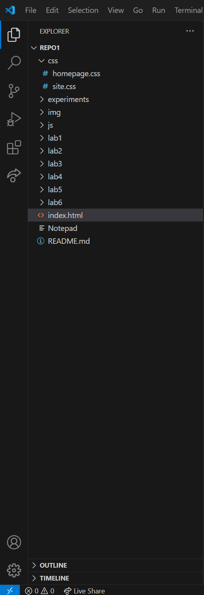

Lab 3 - File Structure
Not too much of a challenge, as I had already begun messing around with my website, adding some links to my music stuff for fun. I also figured out a way to get images to be in a nice row side by side, so that helped the process of adding another picture.
Results
Lab organization picture is below
